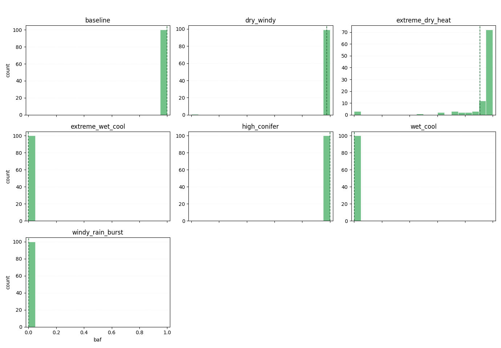
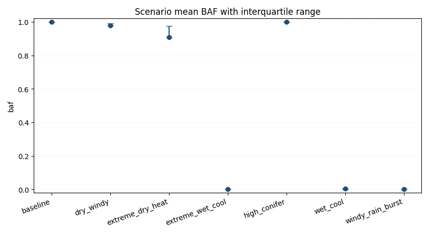
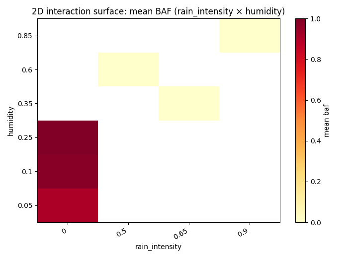
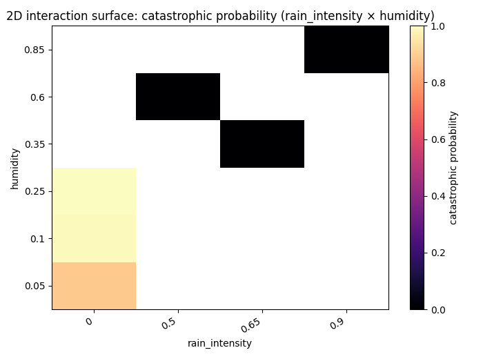

Forest fire experiments report
Overall
Total runs: 700
Mean burned area fraction (all / uncensored): 0.5556 / 0.5556
Mean auc_normalized (all / uncensored): 0.0162 / 0.0162
Mean time_to_extinguish (all / uncensored): 74.9529 / 74.9529
Survival median time_to_extinguish (KM, right-censored by max_steps): 74.0000 (reached=True)
Survival probability P(TTE > 200): 0.0786
Critical share (all / uncensored): 0.5543 / 0.5543
BAF quantiles p25/p50/p75/p95: 0.0003 / 0.9688 / 0.9990 / 0.9998
Burned area p95/p99: 0.9998 / 0.9999
Critical BAF threshold used: 0.8000
Catastrophic probability (baf >= 0.8000): 0.5543
Scenario ranking metric: auc_normalized_mean
Censored runs (truncated by max_steps): 0 (0.0000)
Pairwise significance tests: 20 / 21 significant pairs for baf; 21 / 21 for auc_normalized (BH q<=0.05).
Note: censored runs can bias metrics: fire_duration and AUC are typically underestimated, while BAF-related risk can be understated when fire is still active at truncation.
Worst scenarios by Mean auc_normalized (normalized)
high_conifer: 0.0399
baseline: 0.0389
dry_windy: 0.0206
Censoring max_steps bias audit
Target rule: censored_share < 0.0200
Initial max_steps: 500
Final max_steps: 500
Stop reason: target_met
Absolute KPI ranking
Mean burned area fraction (absolute, point estimate)
high_conifer: 0.9995
baseline: 0.9994
dry_windy: 0.9780
KPI comparison by scenario (all / uncensored)
baseline: baf=0.9994/0.9994, auc_normalized=0.0389/0.0389, time_to_extinguish=77.0200/77.0200, critical=1.0000/1.0000, censored_share=0.0000, baf_q(p25/p50/p75/p95)=0.9992/0.9995/0.9997/0.9999
dry_windy: baf=0.9780/0.9780, auc_normalized=0.0206/0.0206, time_to_extinguish=142.6000/142.6000, critical=0.9900/0.9900, censored_share=0.0000, baf_q(p25/p50/p75/p95)=0.9862/0.9887/0.9902/0.9923
extreme_dry_heat: baf=0.9087/0.9087, auc_normalized=0.0134/0.0134, time_to_extinguish=206.8500/206.8500, critical=0.8900/0.8900, censored_share=0.0000, baf_q(p25/p50/p75/p95)=0.9465/0.9691/0.9769/0.9829
extreme_wet_cool: baf=0.0001/0.0001, auc_normalized=0.0001/0.0001, time_to_extinguish=2.6700/2.6700, critical=0.0000/0.0000, censored_share=0.0000, baf_q(p25/p50/p75/p95)=0.0001/0.0001/0.0001/0.0002
high_conifer: baf=0.9995/0.9995, auc_normalized=0.0399/0.0399, time_to_extinguish=75.1400/75.1400, critical=1.0000/1.0000, censored_share=0.0000, baf_q(p25/p50/p75/p95)=0.9993/0.9995/0.9997/0.9999
wet_cool: baf=0.0025/0.0025, auc_normalized=0.0003/0.0003, time_to_extinguish=12.9800/12.9800, critical=0.0000/0.0000, censored_share=0.0000, baf_q(p25/p50/p75/p95)=0.0003/0.0011/0.0027/0.0075
windy_rain_burst: baf=0.0008/0.0008, auc_normalized=0.0002/0.0002, time_to_extinguish=7.4100/7.4100, critical=0.0000/0.0000, censored_share=0.0000, baf_q(p25/p50/p75/p95)=0.0001/0.0004/0.0009/0.0024
Time-to-extinguish survival KPI (right-censored by max_steps)
Interpret time via survival metrics (KM): median reflects extinction-time distribution robustly under censoring.
Overall median TTE: 74.0000 (reached=True, lower_bound=336.0000)
Overall P(TTE > 200): 0.0786
Highest persistence scenarios by P(TTE > 200):
extreme_dry_heat: P(TTE>200)=0.5500, median=205.0000 (reached=True)
baseline: P(TTE>200)=0.0000, median=77.0000 (reached=True)
dry_windy: P(TTE>200)=0.0000, median=141.0000 (reached=True)
Mean burned area fraction (95% bootstrap CI)
high_conifer: 0.9995 (95% CI: 0.9994..0.9995)
baseline: 0.9994 (95% CI: 0.9994..0.9995)
dry_windy: 0.9780 (95% CI: 0.9577..0.9884)
Conservative risk ranking (mean BAF upper 95% CI bound)
high_conifer: upper_ci=0.9995 (mean=0.9995, 95% CI: 0.9994..0.9995)
baseline: upper_ci=0.9995 (mean=0.9994, 95% CI: 0.9994..0.9995)
dry_windy: upper_ci=0.9884 (mean=0.9780, 95% CI: 0.9577..0.9884)
Mean AUC (absolute)
high_conifer: 30251.7500
baseline: 30212.3300
dry_windy: 29563.0400
Normalized KPI ranking
Mean peak_fire_fraction (normalized)
high_conifer: 0.0852
baseline: 0.0832
dry_windy: 0.0572
Composite risk ranking
Mean composite risk score (normalized, 95% bootstrap CI)
extreme_dry_heat: 0.3949 (95% CI: 0.3782..0.4095)
dry_windy: 0.3692 (95% CI: 0.3602..0.3743)
baseline: 0.3366 (95% CI: 0.3360..0.3370)
Mean auc_normalized (normalized)
high_conifer: 0.0399
baseline: 0.0389
dry_windy: 0.0206
Scenario pairwise significance tests
Method: two-sided permutation test on mean differences (2000 resamples), Benjamini–Hochberg correction, and Cliff's delta effect size.
baf
baseline vs dry_windy: mean_diff=0.0214, p=0.0005, q=0.0005, significant=True, cliffs_delta=1.0000 (large)
baseline vs extreme_dry_heat: mean_diff=0.0908, p=0.0005, q=0.0005, significant=True, cliffs_delta=1.0000 (large)
baseline vs extreme_wet_cool: mean_diff=0.9993, p=0.0005, q=0.0005, significant=True, cliffs_delta=1.0000 (large)
baseline vs wet_cool: mean_diff=0.9969, p=0.0005, q=0.0005, significant=True, cliffs_delta=1.0000 (large)
baseline vs windy_rain_burst: mean_diff=0.9987, p=0.0005, q=0.0005, significant=True, cliffs_delta=1.0000 (large)
auc_normalized
baseline vs dry_windy: mean_diff=0.0184, p=0.0005, q=0.0005, significant=True, cliffs_delta=1.0000 (large)
baseline vs extreme_dry_heat: mean_diff=0.0256, p=0.0005, q=0.0005, significant=True, cliffs_delta=1.0000 (large)
baseline vs extreme_wet_cool: mean_diff=0.0389, p=0.0005, q=0.0005, significant=True, cliffs_delta=1.0000 (large)
baseline vs wet_cool: mean_diff=0.0386, p=0.0005, q=0.0005, significant=True, cliffs_delta=1.0000 (large)
baseline vs windy_rain_burst: mean_diff=0.0388, p=0.0005, q=0.0005, significant=True, cliffs_delta=1.0000 (large)
continuous_param_correlations (uncontrolled)
Note: global Pearson correlations for continuous params; includes r, CI, p, BH q, and q<=0.05 flag. Ranking mode: q_then_abs_r.
param_rain_intensity vs baf: r=-0.9390, 95% CI -0.9498..-0.9271, p=<1e-4, q=<1e-4, q<=0.05=True
param_rain_intensity vs max_spread_rate: r=-0.8962, 95% CI -0.9085..-0.8828, p=<1e-4, q=<1e-4, q<=0.05=True
param_rain_intensity vs shape_complexity: r=0.8905, 95% CI 0.8681..0.9101, p=<1e-4, q=<1e-4, q<=0.05=True
param_rain_intensity vs peak_fire_size: r=-0.8715, 95% CI -0.8833..-0.8584, p=<1e-4, q=<1e-4, q<=0.05=True
param_temperature_c vs fire_duration: r=0.8111, 95% CI 0.7906..0.8286, p=<1e-4, q=<1e-4, q<=0.05=True
continuous_param_correlations (controlled by scenario)
Method: within-scenario demeaning (scenario fixed-effects style). Ranking mode: q_then_abs_r.
binary_param_effects
For binary params: mean(True)-mean(False), plus point-biserial correlation with 95% CI.
param_rain_enabled vs baf: mean_diff=-0.9703, point_biserial_r=-0.9853, 95% CI -0.9953..-0.9725
param_rain_enabled vs max_spread_rate: mean_diff=-41.1750, point_biserial_r=-0.9344, 95% CI -0.9476..-0.9191
param_rain_enabled vs peak_fire_size: mean_diff=-676.8558, point_biserial_r=-0.9137, 95% CI -0.9263..-0.8986
param_rain_enabled vs shape_complexity: mean_diff=1.9209, point_biserial_r=0.8259, 95% CI 0.7971..0.8532
param_rain_enabled vs fire_duration: mean_diff=-117.7158, point_biserial_r=-0.7720, 95% CI -0.7942..-0.7503
Scenario-local top parameter-metric correlations
baseline
Not enough information for per-scenario correlation estimation (runs: 100, minimum: 5, varying params: 0/11).
⚠️ Constant param_* in this scenario (11): param_conifer_ratio, param_f, param_flamm_conif, param_flamm_decid, param_height...
dry_windy
Not enough information for per-scenario correlation estimation (runs: 100, minimum: 5, varying params: 0/11).
⚠️ Constant param_* in this scenario (11): param_conifer_ratio, param_f, param_flamm_conif, param_flamm_decid, param_height...
extreme_dry_heat
Not enough information for per-scenario correlation estimation (runs: 100, minimum: 5, varying params: 0/11).
⚠️ Constant param_* in this scenario (11): param_conifer_ratio, param_f, param_flamm_conif, param_flamm_decid, param_height...
extreme_wet_cool
Not enough information for per-scenario correlation estimation (runs: 100, minimum: 5, varying params: 0/11).
⚠️ Constant param_* in this scenario (11): param_conifer_ratio, param_f, param_flamm_conif, param_flamm_decid, param_height...
high_conifer
Not enough information for per-scenario correlation estimation (runs: 100, minimum: 5, varying params: 0/11).
⚠️ Constant param_* in this scenario (11): param_conifer_ratio, param_f, param_flamm_conif, param_flamm_decid, param_height...
wet_cool
Not enough information for per-scenario correlation estimation (runs: 100, minimum: 5, varying params: 0/11).
⚠️ Constant param_* in this scenario (11): param_conifer_ratio, param_f, param_flamm_conif, param_flamm_decid, param_height...
windy_rain_burst
Not enough information for per-scenario correlation estimation (runs: 100, minimum: 5, varying params: 0/11).
⚠️ Constant param_* in this scenario (11): param_conifer_ratio, param_f, param_flamm_conif, param_flamm_decid, param_height...
Family-level parameter sensitivity (OFAT-aware)
Grouping rule: OFAT scenarios are grouped by axis <base> / <varied_param> (e.g. transition_low_humidity / humidity).
Non-OFAT scenarios are excluded from this OFAT sensitivity section.
For each OFAT axis: Pearson correlation and linear slope with 95% bootstrap CI.
baseline
Excluded: scenario name does not match OFAT naming convention.
dry_windy
Excluded: scenario name does not match OFAT naming convention.
extreme_dry_heat
Excluded: scenario name does not match OFAT naming convention.
extreme_wet_cool
Excluded: scenario name does not match OFAT naming convention.
high_conifer
Excluded: scenario name does not match OFAT naming convention.
wet_cool
Excluded: scenario name does not match OFAT naming convention.
windy_rain_burst
Excluded: scenario name does not match OFAT naming convention.
2D sensitivity (interaction surface)
Built from two most influential continuous params for baf (by absolute global correlation).
Pair param_rain_intensity × param_humidity: coverage=0.2500 (6/24 cells), interaction_score_baf=0.0000 (weak).
OFAT comparison hint: if OFAT curves look near-linear but interaction score is moderate/strong, this indicates non-additive interaction effects.
Figures
Global BAF histogram across all scenarios; dashed lines mark per-scenario means. Per-scenario BAF boxplots for core scenarios only (median, IQR, outliers). 
Small-multiple histograms with fixed BAF bins and per-panel y-scale: each panel shows one scenario distribution. 
Scenario mean BAF with interquartile range as asymmetric error bars. 
2D interaction heatmap of mean BAF for top influential parameter pair. 
2D interaction heatmap of catastrophic probability for top influential parameter pair.